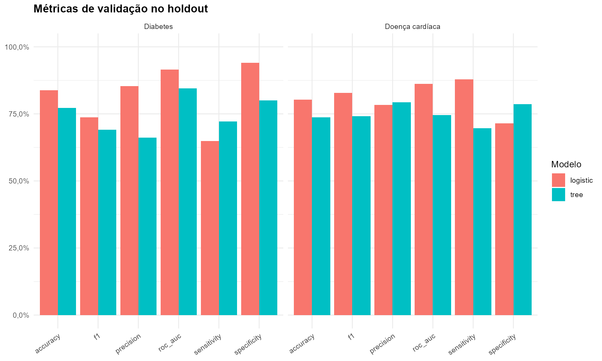
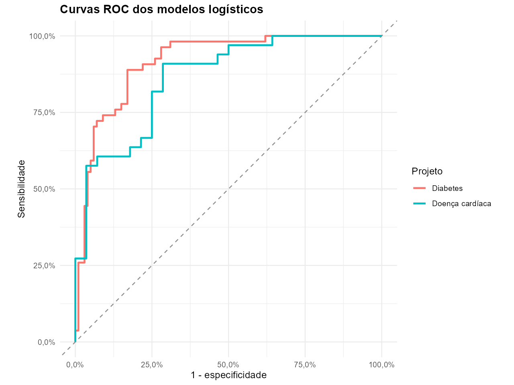
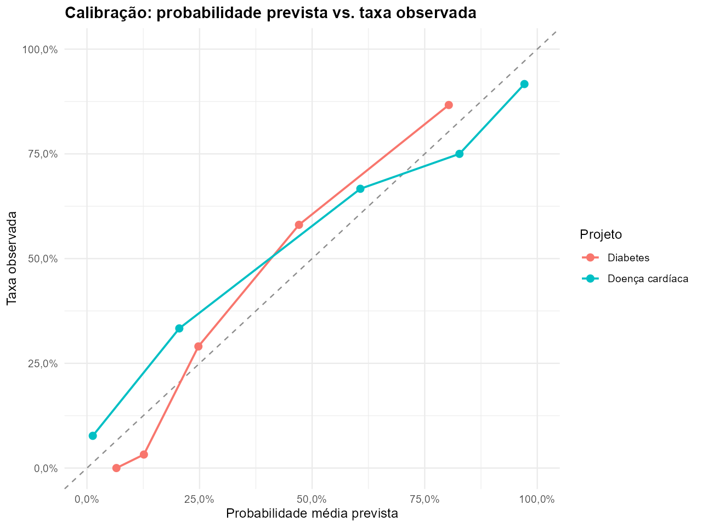
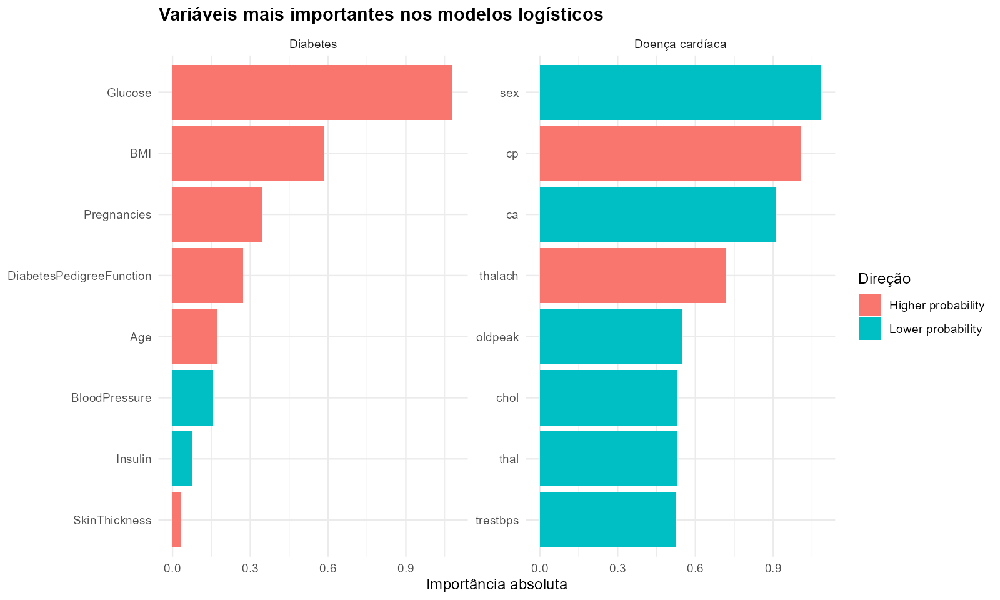
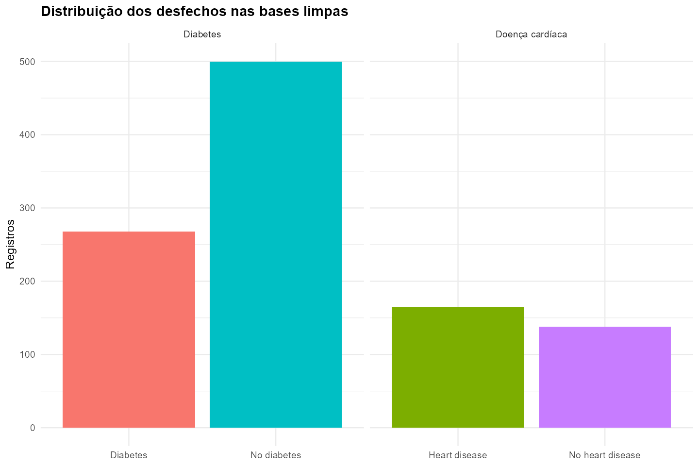
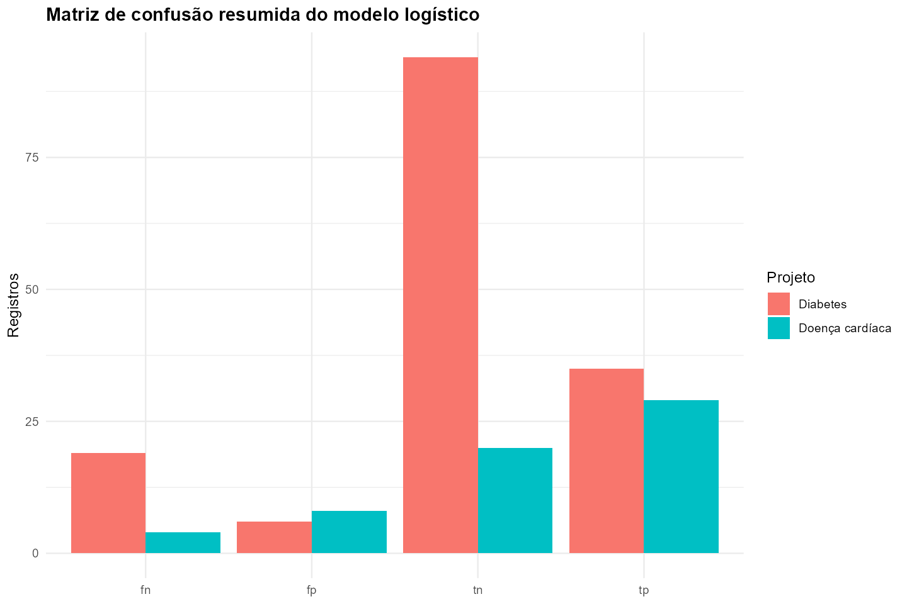

Diabetes
Melhor modelo: logistic
- AUC
- 91.6%
- Acurácia
- 83.8%
- Sensibilidade
- 64.8%
- Especificidade
- 94.0%
Dashboard executivo com comparação entre modelos de diabetes e doença cardíaca, destacando validação holdout, ROC, calibração, interpretabilidade e matriz de confusão.
Melhor modelo: logistic
Melhor modelo: logistic
O dashboard consolida duas bases clínicas em um fluxo profissional de ciência de dados: preparação dos registros, comparação de desempenho, avaliação de discriminação, calibração, interpretação por variáveis e leitura dos erros no holdout. Este projeto não possui componente geoespacial real; por isso, a entrega mantém o foco em validação estatística e explicabilidade clínica.





